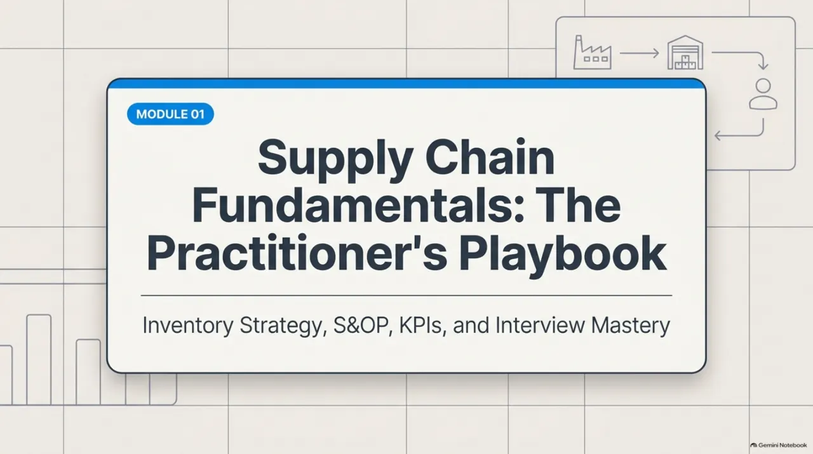

ILLUSTRATIVE / WEEKLY FORECAST REVIEW
The traditional week.
Most of the effort goes into moving data. The thinking gets squeezed into the last hour before the meeting.
MOST TIME: MOVING DATA
For corporate professionals · 5–8 years in
Live sessions that turn years of operations, sales, procurement, finance or ERP work into planning fluency, verified AI workflows and interview answers you can defend — taught with the tools I use as a demand planner in Dubai.
8 modulesplanning → ERP → interview
7 video lessons46 minutes, 67 chapters
2 playbooks29 visual slides
22 interview drills3 role tracks
Live toolsROP, accuracy, PSI
Start with an honest baseline
Tick what you could do tomorrow, without notes. Your starting modules update as you go. Nothing is sent anywhere.
What changes
AI-ready doesn’t mean replacing judgement. It means the copying and formatting shrink, and your time moves to checking, deciding and explaining.
ILLUSTRATIVE / WEEKLY FORECAST REVIEW
Most of the effort goes into moving data. The thinking gets squeezed into the last hour before the meeting.
The curriculum
Every module pairs a concept with a resource from this page, an AI exercise you verify yourself and a practical output you keep.
Lesson cinema
Seven video lessons used in live sessions, from fundamentals to AI architecture. Pick a lesson, then jump straight to the chapter you need.
Supply Chain Fundamentals: Metrics, Alignment and Mastery — inventory risk, ABC, S&OP, OTIF, turns, accuracy vs bias, a live reorder-point simulation and STAR interview answers.
CHAPTERS
Playbook library
Use the arrows, thumbnails or your keyboard. Every number on these slides is recalculated by hand in the session.

Live simulators
The same cases from the playbooks. Interviewers rarely want the formula — they want to hear you reason when an input changes.
SIM 01 / REORDER POINT
Headphone SKU from the playbook. Try the supplier-delay curveball.
SIM 02 / ACCURACY VS BIAS
Three models, forecast vs actual. Watch a tiny SKU wreck MAPE while WAPE barely moves.
| Model | Forecast | Actual | Error % |
|---|---|---|---|
| A | |||
| B | |||
| C |
The AI-ready layer
You already know the logic from Excel. We map it to SQL so you can talk to data teams, then to AI with explicit verification rules.
| You already do this in Excel | SQL equivalent | How AI helps — and the rule |
|---|---|---|
| PivotTable by account and week | GROUP BY account, week | Draft week-over-week commentary from the pivot. You re-check the top three numbers. |
| SUMIFS for one model | SUM(qty) WHERE model = 'X' | Troubleshoot nested formulas. Ask for a hand-checkable test case. |
| XLOOKUP to join inventory | LEFT JOIN on a unique key | Explain why rows go missing. Never paste confidential data into a public tool. |
| Conditional formatting flags | CASE WHEN wos > 12 THEN 'ageing' | Suggest thresholds from history. You document the threshold you choose. |
PROMPT 01 / Draft, then verify
You are a demand planning analyst. From the anonymised PSI table below, write four bullets: 1. Top week-over-week changes and the likely reason 2. Risks (ageing, shortage, late arrivals) 3. Gap to plan in units and value 4. Decisions needed this week If a number cannot be calculated from the table, say so instead of estimating. [paste anonymised table]
Verify: Re-calculate the three largest numbers it quotes in Excel before sending.
PROMPT 02 / Explain, don’t just fix
This Excel formula returns the wrong weeks-of-supply value for some rows. Explain step by step what it does, list likely causes (blank cells, text numbers, wrong range), and give a corrected version with a test case I can check by hand. =[paste formula] Sample rows: [paste 5 anonymised rows]
Verify: Run its test case by hand. If you can’t explain the fix, don’t ship it.
PROMPT 03 / Decompose the error
Here is forecast vs actual by account and product for 8 weeks (anonymised). Decompose the total error by account, product and direction (over vs under). Identify the few combinations driving most of the error and whether the bias is persistent. Show your calculation table.
Verify: Check the top driver’s numbers against the source extract.
PROMPT 04 / One question at a time
Interview me for a [Demand Planner] role in [market]. Ask one question at a time, mixing behavioural, technical (PSI, WAPE, bias, ROP) and case questions. After each answer, critique it: what was vague, what number is missing, and what follow-up an interviewer would ask. Do not praise generic answers.
Verify: Bring the transcript to the live session for human feedback.
Template · S&OP operating rhythm
A generic monthly calendar we adapt to your organisation in the session. Dates are working days before or after the decision meeting (M). Click a step.
“A meeting held, email sent or verbal update does not complete a step.”
Each step needs its stated output, a named owner, a due date and verification. Silence is not concurrence. Unresolved exceptions stay visible until someone with authority accepts them.
| Activity | Responsible | Accountable | Consulted | Informed |
|---|---|---|---|---|
| Cycle calendar | Planner | Sponsor | All managers | Leadership |
| Baseline forecast | Planner + analyst | Planner | Commercial, marketing | Supply |
| Channel demand input | Channel team | Commercial manager | Planner, marketing | Supply |
| Materials & capacity | Supply teams | Supply manager | Quality, warehouse | Commercial |
| Financial validation | Finance | Finance | Commercial, supply | Sponsor |
| Plan approval | Planner prepares | Sponsor | Affected owners | Executing teams |
Interview lab
Real questions from demand planning and ERP interviews, anonymised. Each one shows what’s being tested, the order to answer in, and the follow-up to expect. You fill in your own true story.
What they’re testing
Whether you can run a deadline-driven cycle with structure, owners and checkpoints.
Answer skeleton
If they push
“How did you prioritise?” — value at risk: units × cost × closeness to the threshold.
What they’re testing
Whether you treat accounts differently by value and behaviour.
Answer skeleton
If they push
If you never ran formal ABC/XYZ, say “a simple value and volatility split”. Still a strong answer — and true.
What they’re testing
Clean data, on-time loads and reconciled numbers.
Answer skeleton
If they push
“What do you reconcile?” — system on-hand vs reported, sell-in vs shipments, sell-through vs POS, week-over-week totals.
What they’re testing
Holding a data-based position without being rigid.
Answer skeleton
If they push
“Leadership overrules you?” — load the agreed number, document the risk in quantity and value, track it weekly. The target is what we want; the forecast is what we expect.
What they’re testing
Honesty, fast ownership and the control you added afterwards.
Answer skeleton
If they push
Other real mistake shapes: units vs cases, a pivot filter left on, duplicates after a join. Pick one that actually happened.
What they’re testing
A clear, ordered process you’ve clearly done many times.
Answer skeleton
If they push
“Which step matters most?” — cleaning. A good model on dirty history still gives a bad forecast.
What they’re testing
The three verbs, separately.
Answer skeleton
If they push
“Sales wants a big increase on Friday before cut-off?” — ask for the driver, load what’s supported, log the rest as upside risk with a review date.
What they’re testing
Excel depth first, then systems, BI, automation and AI with controls.
Answer skeleton
If they push
“Weeks of supply formula?” — ending inventory ÷ average forward weekly sell-through.
What they’re testing
Whether you see master data as shared infrastructure.
Answer skeleton
If they push
“Released product?” — created at shared level, then released to a legal entity where company-specific defaults live.
What they’re testing
An ordered checklist from approved source to tested evidence.
Answer skeleton
If they push
“Required field missing?” — don’t guess. Hold it inactive, return to the owner, log it.
What they’re testing
Whether you know the most common silent ERP error.
Answer skeleton
If they push
Ask: “Where do most data issues come from today?”
What they’re testing
Design intent vs how it is actually built.
Answer skeleton
If they push
“Phantom?” — a sub-assembly not stocked separately; its components go straight into the parent order.
What they’re testing
Controlled change, not editing live data.
Answer skeleton
If they push
No approved ECO, no change.
What they’re testing
Reconciliation discipline across systems.
Answer skeleton
If they push
“Which is right?” — released PLM for design, but some MBOM differences are intentional. Confirm before copying.
What they’re testing
Systematic root-cause thinking.
Answer skeleton
If they push
Fix the master data, not just the one order.
What they’re testing
Whether you can trace a planned order to its cause.
Answer skeleton
If they push
Fix the data, rerun, confirm with the planner.
What they’re testing
Whether you protect the control under pressure.
Answer skeleton
If they push
Releasing unapproved data saves an hour and can cost much more later.
What they’re testing
Whether you balance service and cash.
Answer skeleton
If they push
Pair turns with fill rate — never optimise one alone.
What they’re testing
Value thinking, not unit counting.
Answer skeleton
If they push
The lowest-volume SKU can drive the most value.
What they’re testing
Reorder-point arithmetic, said out loud.
Answer skeleton
If they push
Curveball: supplier adds 2 days → 80 units of extra lead-time demand. Expedite, allocate to top customers or find alternate supply.
What they’re testing
Whether you define a metric before praising it.
Answer skeleton
If they push
A strong company-wide average can hide a recurring shortage on a flagship SKU.
What they’re testing
The cross-functional picture.
Answer skeleton
If they push
Output: one approved plan with recorded decisions and owners.
THE HONEST BRIDGE
Rule: never claim a supply chain job or metric you don’t have.
The pivot: “I haven’t managed channel inventory, but in my current role I traced data mismatches across systems to their root cause — the same investigative skill.”
YOUR 60-SECOND PITCH · STARTER
“A supply chain coordinates demand, sourcing, inventory, operations and delivery. Good planning matches customer needs with feasible supply while balancing service, cost and working capital. I use forecasts, lead times, reorder points, S&OP and KPIs to manage those trade-offs.”
Who this is for
Built for professionals with 5–8 years in a corporate role who want to move into planning, or stay relevant as AI changes how planning teams work.
You know stock physically. Learn to plan it on paper and defend it in S&OP.
You know the customer. Learn sell-through, PSI and why a forecast isn’t a target.
You know suppliers. Learn reorder points, MRP and the cost of a two-day delay.
You know cash. Learn turns, days on hand and the inventory side of working capital.
You know the data. Learn what planners need from it and how to talk to them.
One video chapter, paused and discussed.
A playbook slide recalculated by hand.
Excel, SQL or an AI prompt — then verify it.
One question, answered out loud, critiqued.
The trust contract
The academy is new. Until there are consented learner outcomes to publish, judge it by the material on this page.
Free 15-minute fit check
I’ll reply by email to arrange a short call and suggest which modules to start with. If the academy isn’t the right fit, I’ll say so.